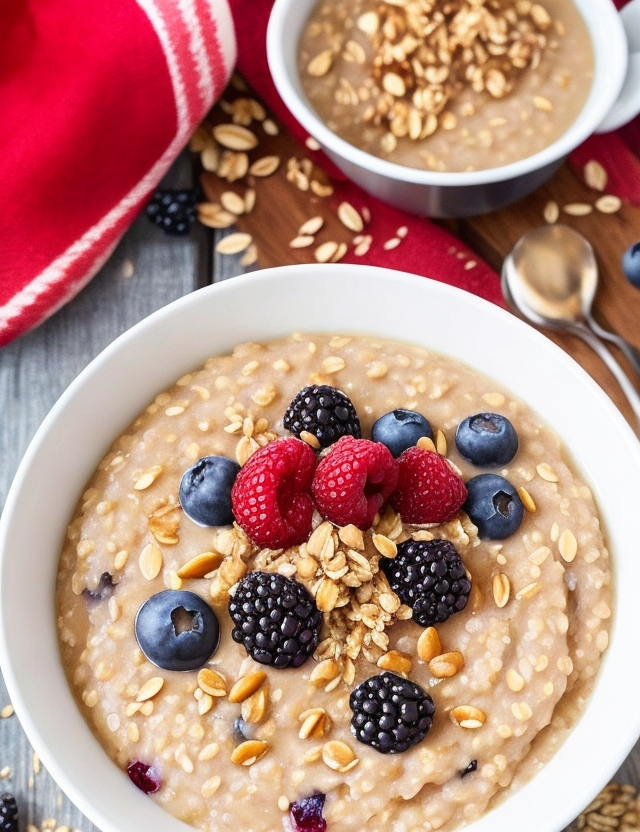

Viking's Oats

Description
A bowl of nourishing oatmeal cooked with a mixture of milk and honey, topped with
a generous sprinkling of nuts, berries, and a drizzle of mead. This would provide
me with sustained energy and vital nutrients.
Ingredients
- 1 cup rolled oats
- 2 cups milk (dairy or plant-based)
- 1 tablespoon honey or maple syrup (optional)
- Assorted nuts (such as almonds, walnuts, or pecans), chopped
- Assorted berries (such as strawberries, blueberries, or raspberries)
- Mead or additional honey for drizzling (optional)
Instructions
- In a saucepan, combine the rolled oats and milk. Bring the mixture to a gentle
boil over medium heat, stirring occasionally to prevent sticking. Reduce the
heat to low and let it simmer for about 5 minutes, or until the oats have absorbed
most of the liquid. Stir occasionally to ensure even cooking.
- If desired, add honey or maple syrup to sweeten the oats. Stir well to incorporate
the sweetener. Taste and adjust the sweetness according to your preference.
- Remove the saucepan from the heat. The oats should have a creamy consistency. If
they seem too thick, you can add a little more milk to achieve the desired consistency.
- Transfer the cooked oats to serving bowls.
- Sprinkle the chopped nuts over the oats. You can use a single type of nut or a mixture
for added texture and flavor.
- Top the oats with a generous amount of assorted berries. Feel free to use fresh or
frozen berries, whichever is available and preferred.
- If you wish to enhance the Viking theme, drizzle a small amount of mead over the oats.
Mead is a traditional honey-based alcoholic beverage associated with Norse culture.
Alternatively, you can drizzle additional honey over the oats for extra sweetness.
- Serve the Viking Oats while still warm, allowing the flavors to meld together. Enjoy
the nourishing and satisfying breakfast that will fuel your inner warrior!
Back to home page